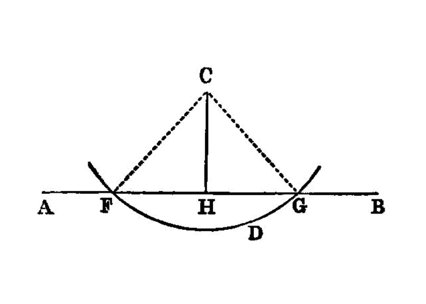

construct perpendicular from point not on line¶
I.12
To a given infinite straight line, from a given point which is not on it, to draw a perpendicular straight line. [1]
—Euclid
{kind=link}
Let AB be the given infinite straight line, and C the given point which is not on it
PROBLEM: draw to the given infinite straight line AB, from the given point C which is not on it, a perpendicular straight line.
For let a point D be taken at random on the other side of the straight line AB`[2]_, and with centre `C and distance CD let the circle EFG be described; [I.post.3]
let the straight line EG be bisected at H, [I.10] and let the straight lines CG, CH, CE be joined. [I.post.1]
I say that CH has been drawn perpendicular to the given infinite straight line AB from the given point C which is not on it.
For, since GH is equal to HE, and HC is common,
the two sides GH, HC are equal to the two sides EH, HC respectively;
and the base CG is equal to the base CE;
therefore the angle CHG is equal to the angle EHC. [I.8] And they are adjacent angles.
But, when a straight line set up on a straight line makes the adjacent angles equal to one another, each of the equal angles is right, and the straight line standing on the other is called a perpendicular to that on which it stands. [I.def.10]
Therefore CH has been drawn perpendicular to the given infinite straight line AB from the given point C which is not on it.
references¶
[I.def.10]: /elem.1.def.10 “Book 1 - Definition 10” [I.10]: /elem.1.10 “Book 1 - Proposition 10” [I.8]: /elem.1.8 “Book 1 - Proposition 8” [I.post.1]: /elem.1.post.1 “Book 1 - Postulate 1” [I.post.3]: /elem.1.post.3 “Book 1 - Postulate 3”